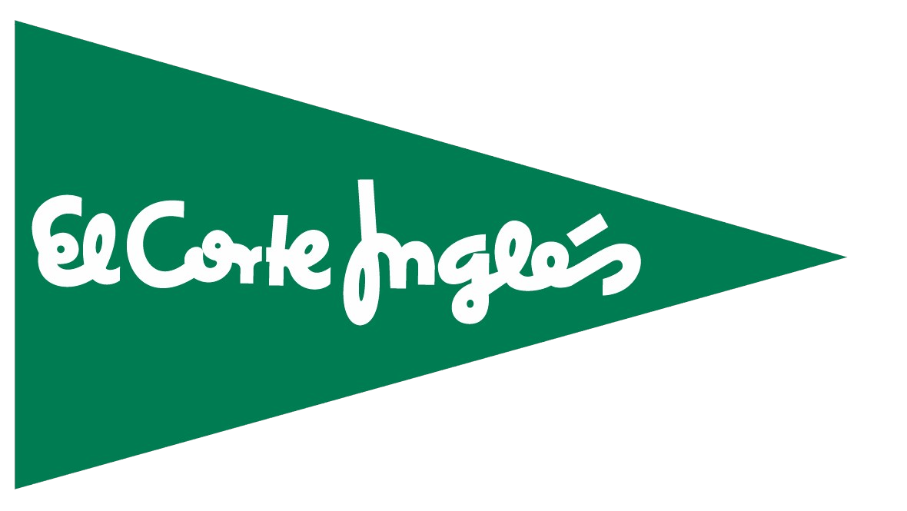

About me
Passionate about the world of data and constantly learning.
Education
-
 Master's Degree in Data Science
Universitat Oberta de Catalunya2022 -
Master's Degree in Data Science
Universitat Oberta de Catalunya2022 -
-
 BSc in Software Engineering
Technical University of Madrid2017 - 2021
BSc in Software Engineering
Technical University of Madrid2017 - 2021
End-of-degree project grade: A+Developed in Power BI.
Work Experience

Analysis and data processing for the banking sector with the following functions:
- Development and implementation of ETL processes with Microsoft SQL Server Integration Services.
- Development and implementation of SQL processes with Microsoft SQL Server Data Tools.
- Creation of processes for the extraction of data and generation of business reports automatically.
- Maintenance and monitoring of databases, carrying out a daily control of the execution of the processes.
- Control of the main KPIs related to the business and its development.
- Data audit, detection of inconsistencies and proposal for improvements.
- Cybersecurity and Communications Infrastructure.
- Training in F5, Juniper, Infoblox, AWS, among others.
- Organising more than 30 people under my lead.
- Adequate customer service.
- Maximising the profit for the store.
- Layout management.
- Till coordination.
- Management of banking, till and cash handling.
- New product establishment following the standards of the company for the right placement of stock both in the store and the warehouse.
- Provide the best training to our employees.
- Managing the orders: place, reception and unloading.
- Assembling the first store of the company in Madrid.
- Responsible for the stationery, seasonal and celebrations sections.
- Customer service and till assistant.
- Unloading and implantation of merchandise.
* Achievements *
Promoted to Supervisor.
Sales Assistant
2006 - 2012

- Adequate customer service.
- Establishment of new goods, stock and inventory management.
- Special campaigns.
Skills & Tools
Top Skills
-
ETL process
-
Programming
-
Teamwork
Tools & Technologies
-
R / Python
-
Power BI
-
SQL
Additional Skills & Tools
Courses and certifications
- SQL Server Integration Services (SSIS) Udemy (2022)
- R Programming Johns Hopkins University (2021)
- Curso de Microsoft Power BI Udemy (2021)
- The Data Scientist’s Toolbox Johns Hopkins University (2020)
- Big Data Virtual International Summer School - UPM (2020)
- Inteligencia Artificial Virtual International Summer School - UPM (2020)
- Ciberseguridad Virtual International Summer School - UPM (2020)
Language
- Spanish (Native)
- English (B2 - Fluent)